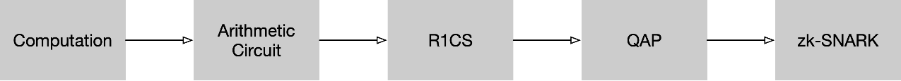
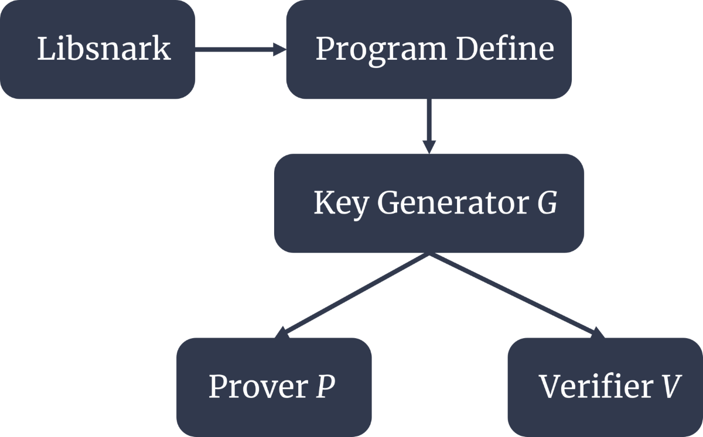

ZK-SNARK are regarded as one of the most popular cryptographic technologies with many potential applications. ZK-SNARK is a concise, non-interactive zero-knowledge proof. It enables the proof of a proposition's correctness without revealing any additional information. Moreover, the resulting proofs possess succinctness, meaning they are small and independent of the computational complexity. In simple terms, ZK-SNARKs allow an individual to prove something to others without disclosing any privacy-related details, while generating compact proofs with low verification costs that are unrelated to the computational effort required for the proof's content.
The following parts are the explanation of ZK-SNARK principle and its flow chart is shown in Fig. 1. For example, we try to get the average and need to confirm correctness without access to the raw data. We know a solution to a mean value equation:
𝑎𝑣𝑔=Σ𝑥/𝑛
where we set 𝑛=5 as example.
 Fig. 1. ZK-SNARK flow chart.Computation to R1CS
Because ZK-SNARK cannot directly be used to solve any computational problem, we need to first convert the problem into the correct "form" to handle it, which is called an R1CS (Rank-1 Constraint System). To be more specific, we use the method called "flattening", which is let the equation only has two term:
1. x = y (where y can be a variable or a number)
2. x = y op z (where op is a binary operator such as +, -, ×, or /, and y and z can be variables, numbers, or sub-expressions)
Therefore, the flattening result in our example expressed as:
𝑠𝑦𝑚1=𝑥1+𝑥2
𝑠𝑦𝑚2=𝑠𝑦𝑚1+𝑥3
𝑠𝑦𝑚3=𝑠𝑦𝑚2+𝑥4
𝑠𝑦𝑚4=𝑠𝑦𝑚3+𝑥5
~𝑜𝑢𝑡=𝑠𝑦𝑚4/5
We can see that each of the statements above is a logic gate in a circuit. In comparison to the original mean value equation, we introduce 4 intermediate variables, 𝑠𝑦𝑚1, 𝑠𝑦𝑚2, 𝑠𝑦𝑚3 and 𝑠𝑦𝑚4, and an additional redundant variable ~𝑜𝑢𝑡 to represent the output. Therefore, this set of statements are R1CS form, which each statement is a constraint and has only one rank.
R1CS to QAP
"Quadratic arithmetic problem" (QAP) is a form of problem and it is easy to verify but hard to solve, which means it is not NP complete question. We need to use QAP to do further ZK-SNARK method. During the process of QAP conversion, if you have the input, you can create a corresponding solution referred to as the witness of the QAP. Then, following step is required to create an actual "zero-knowledge proof" for the witness.
Next, we need to convert the R1CS to a sequence composed of three vectors (𝐴, 𝐵, 𝐶). There is a solution vector 𝑠, which must satisfy the inner product operation:
𝑠∙𝐴×𝑠∙𝐵=𝑠∙𝐶
In this case, the solution vector 𝑠 corresponds to the witness. For our average example, apart from the 10 variables after flattening (𝑠𝑦𝑚1, 𝑠𝑦𝑚2, 𝑠𝑦𝑚3, 𝑠𝑦𝑚4, 𝑥1, 𝑥2, 𝑥3, 𝑥4, 𝑥5, ~𝑜𝑢𝑡) , we also need to introduce the redundant variable ~one in the first component position to represent the number 1. In our average example, one possible arrangement of these 11 components corresponding to a vector is as follows:
𝑠=[~𝑜𝑛𝑒, 𝑠𝑦𝑚1, 𝑠𝑦𝑚2, 𝑠𝑦𝑚3, 𝑠𝑦𝑚4, 𝑥1, 𝑥2, 𝑥3, 𝑥4, 𝑥5, ~𝑜𝑢𝑡]
Assume the input 𝑥𝑛 are [5, 8, 1, 19, 3], and then we can easily get the 𝑠 value:
𝑠=[1, 13, 14, 33, 36, 5, 8, 1, 19, 3, 7.2]
Take first sequence 𝑠𝑦𝑚1=𝑥1+𝑥2 ⇒(𝑥1+𝑥2)∗1=𝑠𝑦𝑚1 as example, the vectors (𝐴, 𝐵, 𝐶) like:
𝐴1=[0, 0, 0, 0, 0, 1, 1, 0, 0, 0, 0]
𝐵1=[1, 0, 0, 0, 0, 0, 0, 0, 0, 0, 0]
𝐶1=[0, 1, 0, 0, 0, 0, 0, 0, 0, 0, 0]
The other sequences do the same things, then we can get 5 sets of QAP because we have 5 R1CSs. After that, we need to convert the QAP form to polynomial instead of the dot product of the matrix. Lagrange interpolation is applied in this process in order to get the coefficient of the constraints which come from the polynomial pass some specific point.
To be more specific, we convert 5 three-vector-sets of length 11 into 11 sets of polynomials. Each set of polynomials consists of three quartic polynomials.
First, we obtain the polynomials for the first value of 𝐴 vector corresponding to the 5 constraints. This means we use the Lagrange interpolation theorem to find the polynomials passing through points (1, 𝐴1(1)), (2, 𝐴2(1)), (3, 𝐴3(1)), (4, 𝐴4(1)) and (5, 𝐴5(1)). Then, get the coefficients of this polynomial. Because of the polynomials passing through 5 points, it is a quartic polynomial and correspondingly it has 5 coefficients for the new first value of 𝐴 vector corresponding to the 5 constraints.
Similarly, we can obtain the polynomials for each vector corresponding to the remaining constraints. After we get these 11 polynomials, QAP can become:
[𝑠∙𝐴(𝑛)]×[𝑠∙𝐵(𝑛)]−[𝑠∙𝐶(𝑛)]=𝐻(𝑛)×𝑍(𝑛)
where 𝑍(𝑛)=(𝑛−1)(𝑛−2)…(𝑛−5). Therefore, this formula is a standard QAP. Then, the following things is that using this QAP do the ZK-SNARK.
QAP to ZK-SNARK
By converting computational problem into QAP, we can simultaneously check all the constraints using polynomial inner products, rather than individually checking each constraint like in R1CS.
To verify the result polynomial [𝑠∙𝐴(𝑛)]×[𝑠∙𝐵(𝑛)]−[𝑠∙𝐶(𝑛)] at 𝑛＝1,2,3,4 and 5, we need to check if it equals 0 at all these points. If the polynomial is non-zero at any of these 5 points, the verification fails. Otherwise, if it is zero at all 5 points, the verification is successful.
According the QAP is easy to verify but hard to solve, so if prover have the solution, it is easy to verify. To be specific, verifier randomly give the 𝑛′ to the prover, then the prover can calculate 𝐴̅(𝑛′), 𝐵̅(𝑛′), 𝐶̅(𝑛′) and 𝐻(𝑛′) to verifier where 𝐴̅(𝑛′)=𝑠∙𝐴(𝑛′) and so on. Then, the verifier can calculate the 𝐴̅(𝑛′)×𝐵̅(𝑛′)−𝐶̅(𝑛′) is equal to 𝐻(𝑛′)×𝑍(𝑛′) or not to verify that the prover has the knowledge or not. So far, the briefly proof of ZK-SNARK has been explained. The real implementation on ZK-SNZRK is shown in Fig. 2.
 Fig. 2. Real implementation on ZK-SNZRK.